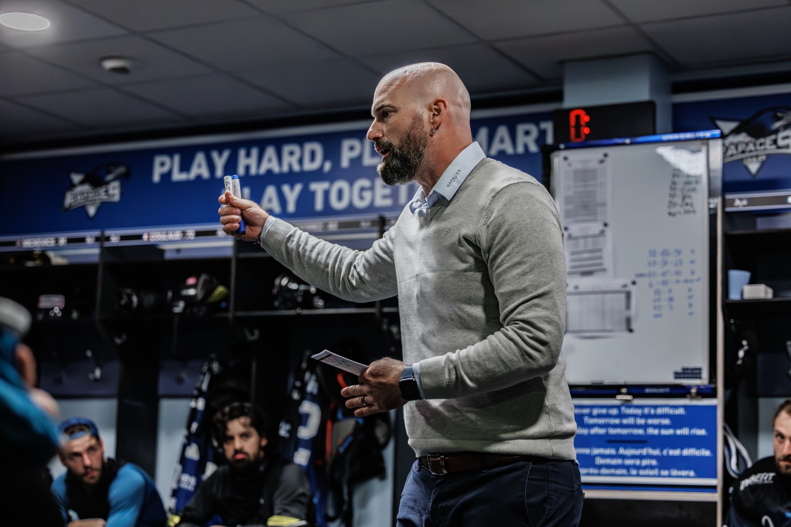
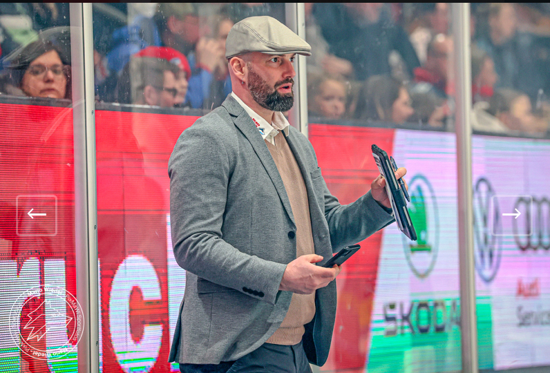
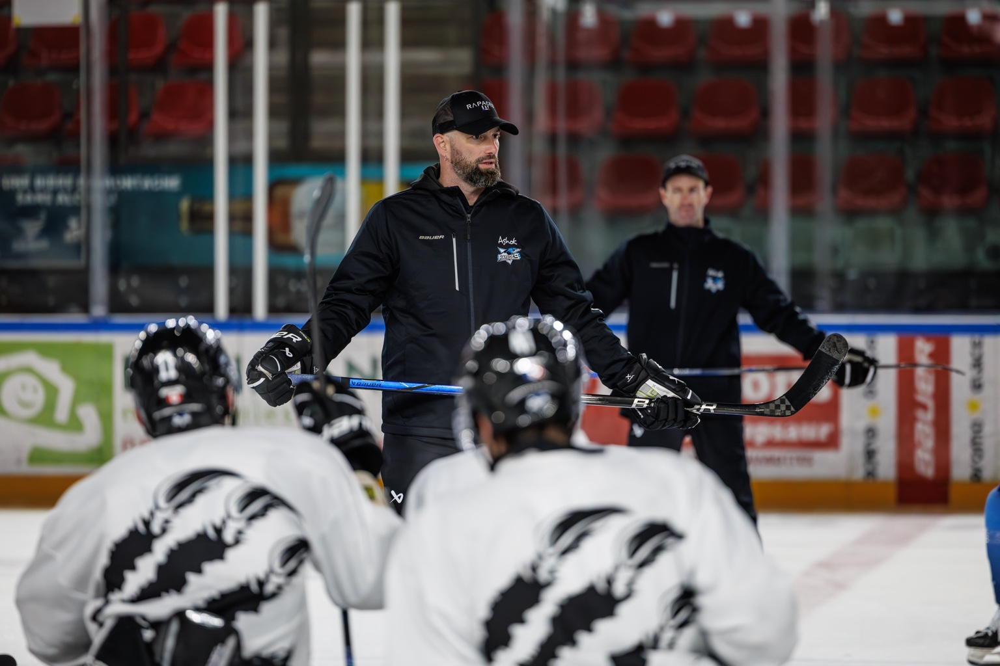
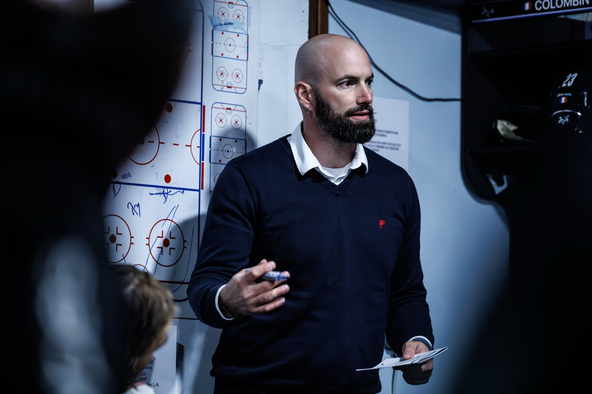
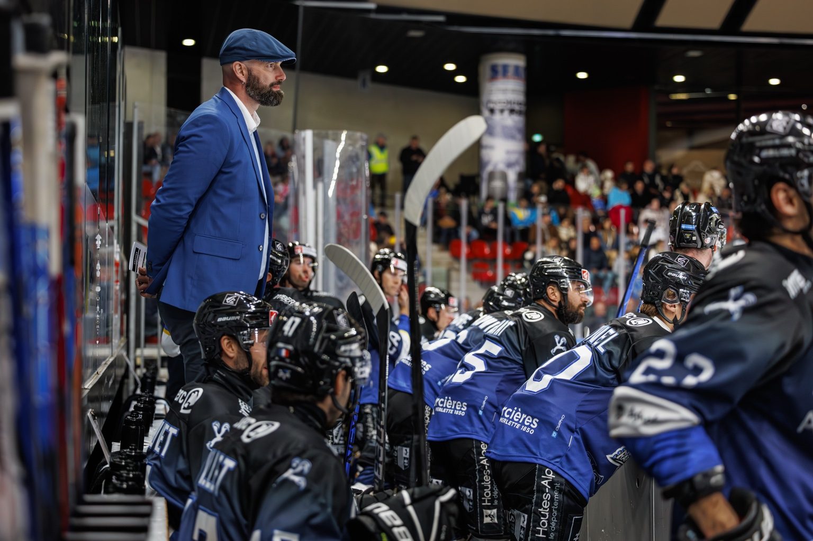
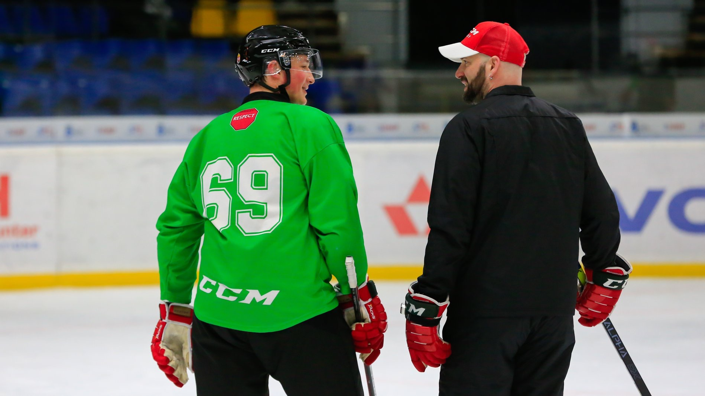
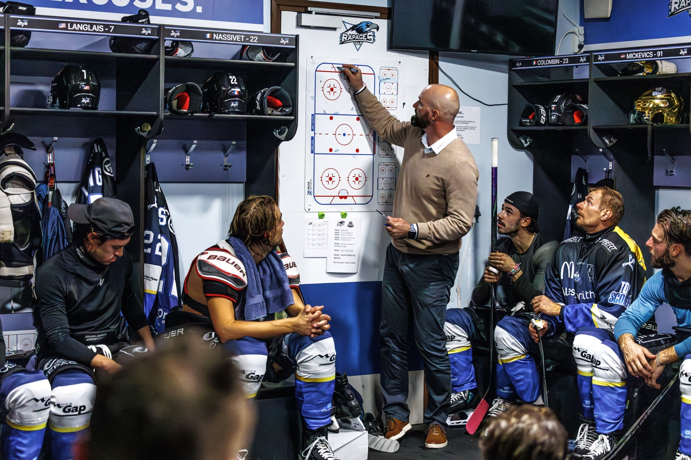
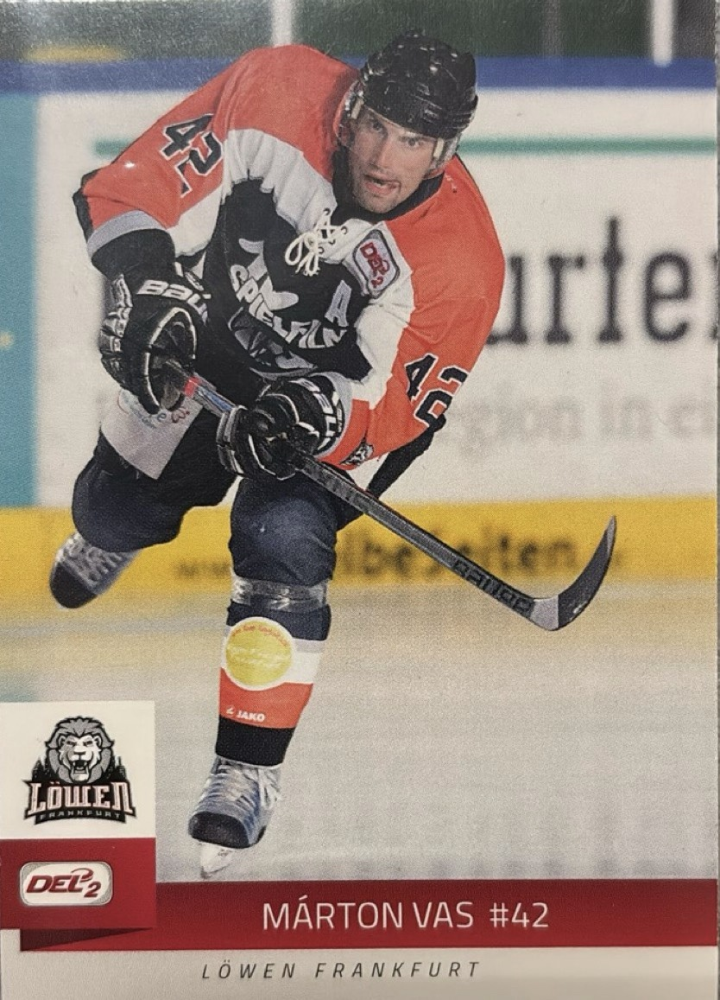

BTI · BETWEEN THE IRONS
UNDERSTAND MORE.
BECOME BETTER.
Hockey insight built from experience — as a player, coach and video analyst.
I'VE SEEN THE GAME FROM BOTH SIDES.
On the ice. Behind the bench. In the video room.

TO TEACHING IT.
Coaching experience built around clear communication and actionable detail.
COACHING EXPERIENCE ↓
After my playing career, I continued in hockey through player development and coaching. I worked within the Hungarian Ice Hockey National Development Program, developing players from U13 through U18, before becoming Head Coach of the Hungarian U20 National Team.
I later took on a management role as General Manager within the Hungarian Ice Hockey Federation, adding another perspective to my understanding of player development and the game.
My coaching career then continued internationally, working in both France and Germany as a Head Coach and Assistant Coach.
These different roles — from individual player development to national teams, professional coaching and management — have shaped the way I work with players today and the way I approach video analysis through BTI.

TO ANALYZING IT.
Detailed video analysis that helps players and teams understand more and improve with purpose.
WHAT PLAYERS & FAMILIES SAY↓
“Marton’s video analysis identified and corrected deficiencies in my game while improving my confidence in myself and my playmaking abilities. Marton knows a lot about all aspects of the game and is able to break down and communicate complex concepts into clear and concise steps. He helped me through many challenges, both in the physical and mental game of hockey. Overall he was very helpful with the jump from High School to the NCAA.”
“Marton created outstanding highlights videos of my daughter that capture her strengths in all aspects of her hockey game. The process was quick and easy. I sent Marton videos of full games. Within a few days he produced reels that were high-quality, focused and well timed. Each video has multiple segments, flowing seamlessly, clearly identifying my daughter and her highlighted skills. She has received great feedback from coaches on the reels and we are thrilled with the results!”
FROM EXPERIENCE TO ACTION
SEE IT. EXPLAIN IT. APPLY IT.
The same principles that shape BTI also shape how the game is communicated in the room and on the ice.

TEAM COMMUNICATION
TURNING GAME FILM INTO TEACHING.
Structured review only matters if the message is clear, relevant and connected to the team’s tactical identity.

TACTICAL DETAIL
MAKE THE GAME EASIER TO READ.

COACHING PERSPECTIVE
BUILT FROM REAL GAME EXPERIENCE.

BTI FOCUS PLAN
FROM FOCUS POINT TO ON-ICE WORK.
Use the insights from video to create targeted, practical work around the details that matter most to your game.

BTI TEAM VIDEO
POST-GAME REVIEW WITH PURPOSE.
Build team review around your structure, tactical principles and coaching message.
THE BTI PROCESS
A CLEAR PATH TO IMPROVEMENT.
REVIEW
We review your footage.
ANALYZE
We break it down.
DELIVER
You receive clear feedback.
IMPROVE
You apply the insights.

BUILT ON EXPERIENCE. FOCUSED ON DEVELOPMENT.
EVERY PLAYER AND TEAM IS UNIQUE.
My goal is to provide clear, actionable insights that create real improvement — on and off the ice.
Let's work together.GET IN TOUCH
READY TO SEE YOUR GAME DIFFERENTLY?
Whether you're looking for individual game analysis, a recruitment highlight reel, or video support for your team, let's talk about what you need.
info@betweentheirons.com